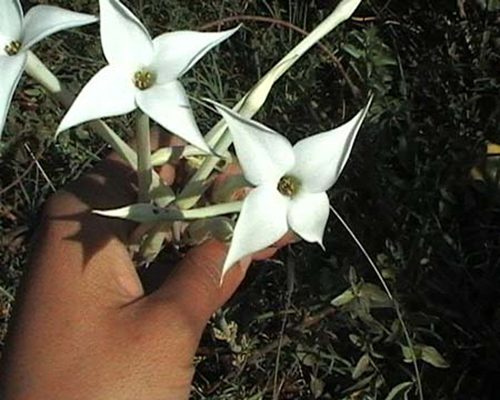
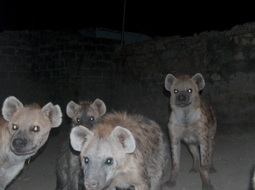
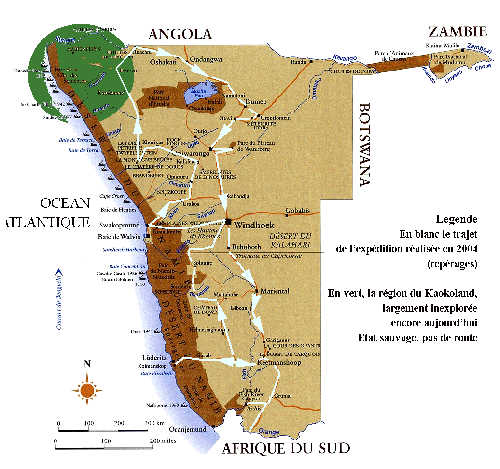
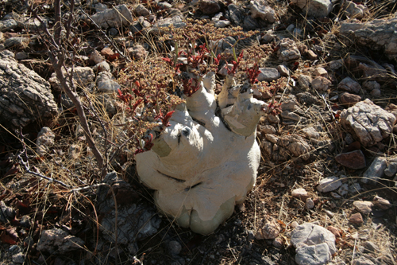

Extrait d'Herborisation en Ethiopie, 2006, documentaire, Sabrina Issa
Kalanchoe schimperiana, Crassulaceae
Depuis 2003, vidéos, photos, installation se nourrissent des expéditions botaniques réalisées dans de nombreux pays. Sur une durée moyennes d'un mois, artistes et botanistes sillonnent les paysages de l'Afrique du sud, de la
Namibie, du Zimbabwe, du mozambique, de l'Ethiopie, de l'Indes... Les plantes constituent une collection se prétant aux expérimentations et installations du LAAB.
Les expéditions botaniques sont menées par une équipe mixte de scientifiques, de passionnés et d'artistes. En Namibie plusieurs zones sont repérées et quelques "stations" sont relévées comme présentant un échantillon végétal exceptionnel.
Faire connaître, protéger et transmettre la biodiversité de cette zone à travers le quotidien de l'exploration est l'objectif majeur de de ce voyage.
Notre souhait est aussi de montrer comment le regard se construit de la rencontre et de la découverte, d'une exploration des formes et du contact de l'altérité portée à ce qui nous entoure. Les réalisations de ce voyages ambitionnent de porter un regard sur l'archivage d'expériences.
Hyènes, tradition entretenue à la prédiction des secheresses, Ethiopie, 2004

Carte de l'exploration, expédition en Namibie, 2009.

Cyphostemma baineisii, Vitaceae, Namibie 2009

Boophane disticha, Namibie, 2009